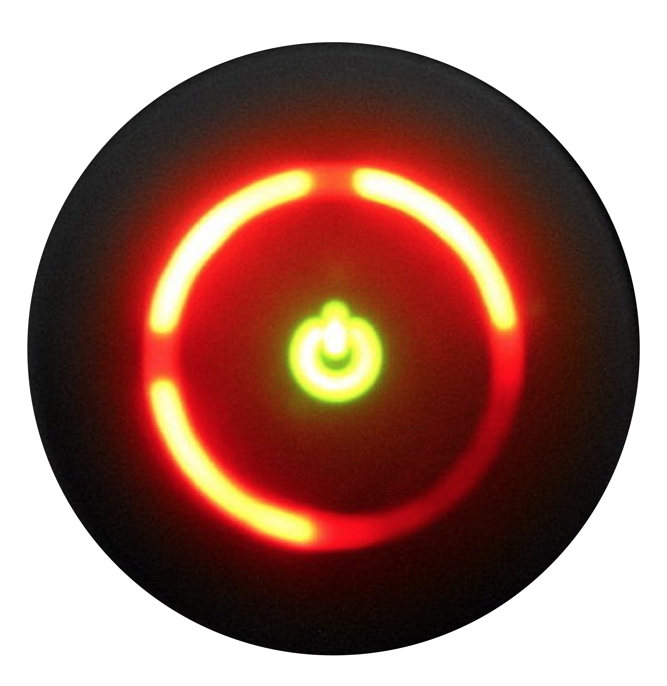
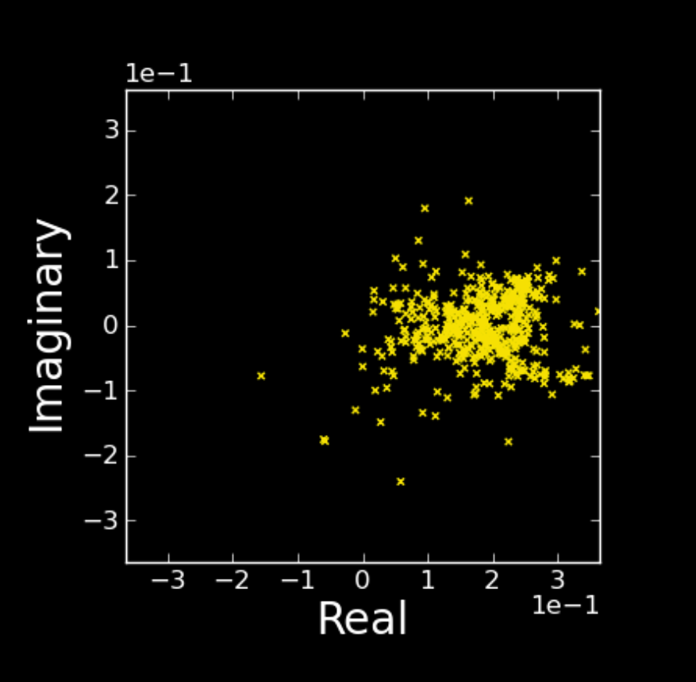

A Narrative on Mass
Every known object in the universe is given a certain amount of mass - a totally dimensionless property which tells us how much matter is in that object. It quantifies the density of its internal particles and indicates how tightly packed together they are. This property is not pre-determined by the object's shape or size - a balloon is usually much larger than an apple, yet the internal composition of the latter is such that it most likely has a much greater mass.
1: Spacetime
Scientists have applied this notion of mass to a larger idea that both the physicality of space and the directional journey of time are completely fused together, two expressions of the same entity. To take a step in space is to simultaneously move along in time. This idea of unification is referred to as spacetime and is usually characterised by a type of fabric which structures the universe, upon/within which all matter exists. This fabric upholds the physical laws in which we and everything we know operates and at the same time is fundamentally impressionable. Similar to the effect of a heavy bowling ball on a trampoline, the immense mass of objects like stars and planets can bend spacetime, creating curvatures in its structure which will then change how other objects behave when close enough to those dense bodies (imagine a marble that is rolled onto the trampoline, bending towards the bowling ball). The greater the object's mass, the more intensely it bends its surrounding area of spacetime and the paths taken by nearby objects become further altered in both speed and direction.
2: Collapsar
This warping of spacetime is particularly noticeable when stars progress through their evolution cycle. When one finally reaches 'the end of its life', its constant outwards radiation of energy starts to give way to the pull of its own gravity and the star's core begins to break down. Scientists, most notably Subrahmanyan Chandrasekhar, have found a direct mathematical relationship between the mass of a star and the final form it takes after collapsing - depending on its mass, it will become either a white dwarf, a neutron star or a black hole. The mass of the Sun is used as a measuring stick to determine these categories. Stars with a mass of up to 1.4 times that of the Sun will shrink into a white dwarf, an extremely hot body of supercompressed matter which tends to shrink down to the size of Earth. Those with a mass between 1.4 - 2.8 times the Sun's will endure a greater collapse, compressing to just 20 kilometres (km) across, although its internal composition can still radiate enough energy to resist complete disintegration.
3: Black Holes
If the star's core continues to shrink, the gravitational force it places on itself becomes increasingly stronger. This exponential warping of surrounding spacetime makes it harder and harder for a nearby object to free itself from the star's gravitational pull; the minimum speed to free oneself is referred to as the escape velocity. For example: for an object to hit its escape velocity and become free from Earth's gravity, it must be travelling away from the planet at a speed of 11km per second. From the Sun, it must be at 615km per second. From a neutron star, something only double the mass of the Sun, the speed required is 150,000km per second, also known as half the speed of light.
If the mass of a dying star is at a solar rate higher than 2.8, gravity can successfully override any resistance from the star's core. Once the size of the compressed core gets down to about 18km, the escape velocity becomes equal to the speed of light. At this rate, nothing can escape the gravitational pull of this singularity, not even light or information. We are left with a colourless region known as a black hole. The boundary that marks the black hole's fatal reach, the gateway between a near miss and an endless dive, is referred to as the event horizon.